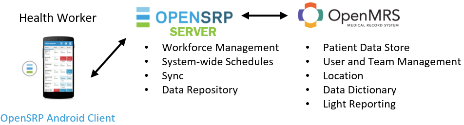

OpenSRP utilizes three core systems to manage the mobile implementation: the Android client, OpenSRP server and OpenMRS server. The Android client is a mobile application that can be installed on Android tablets and smartphones. This is the primary tool of frontline health workers that helps them track the care of client populations. The Android client pushes to the OpenSRP server, which is a centralized system for managing the mobile deployment, reporting and integrating with other systems. The OpenSRP server ensures all mobile devices are synced with the right information. OpenSRP utilizes OpenMRS as the medical record store for all client information. OpenMRS provides core functionality for role-based access controls, locations, team management and a robust health data model that has been proven by the industry.

Beyond this, OpenSRP is able to connect to third party tools for reporting (DHIS2, Tableau and electronic data warehouses) and direct-to-client messaging through RapidPro.
The OpenSRP Android client provides the core frontline health worker interactions with OpenSRP. The Android application runs on tablets and smartphones and is custom-configured to deliver workflows for the target context. Each implementation of OpenSRP creates a custom-tailored application that uses reusable modules and libraries. This allows us to develop a common set of features that are shared across implementations.
The OpenSRP client apps, modules and libraries are maintained on the OpenSRP GitHub organization. Search for the word "client" to filter the list of repositories.
The Zambia Electronic Immunization Register (ZEIR) is an example of an application that contains branding and business logic that's specific to the Zambia context. It depends on numerous modules such as the Child Immunization and Growth Monitoring modules. It also depends on the Client Core libraries. The README file in each repository includes instructions to set up the system and learn more about the implementation. Further details can be found in the developer's guide on the OpenSRP wiki.
The OpenSRP server provides the core workforce management features that ensure all mobile devices are synced, stores client information in the Event-Client (EC) data model and maintains an active connection to OpenMRS. The server also integrates with reporting and third party systems.
The server is able to be configured in multiple ways to accommodate the implementation. The server maintains the form logic and mapping between the Android client and OpenMRS data models, provides active systemwide schedules and can connect to an ETL process for reporting integration. All of these features are configurable in a straightforward way through code. Recent development includes the ability to configure views in the Android client through JSON configuration in the OpenSRP server.
The OpenSRP server source code lives in a single GitHub repository. Each implementation maintains their own branch, with common libraries shared between branches. This allows for code reuse in a modular fashion across multiple implementations. The README file includes instructions to set up the system and the public credentials for testing the app.
The OpenSRP server runs CouchDB as the central data store, which is a document-oriented NoSQL database system that uses JSON files to store data. All data collected from the client and stored on CouchDB is also stored in OpenMRS.
The OpenMRS server provides core functionality to the platform, including user and team management, location management, a robust data store, concept dictionary and light reporting. The OpenMRS community continually drives features independent of OpenSRP that add value to health systems globally. OpenSRP partners with this community to ensure our systems include features that can robustly add value for OpenSRP implementations.
OpenSRP depends on a minimum OpenMRS configuration that supports the core OpenSRP workflows. Implementation specific concepts can be maintained in OpenMRS and linked to data collected in the OpenSRP Android client. Users and teams need to be configured as well, to ensure the appropriate users are accessing the appropriate client information. The OpenSRP server is integrated with OpenMRS using an atom based sync process. Below is a list of OpenMRS modules that are core to the OpenSRP implementatation. The source code for these modules are on both the OpenSRP and OpenMRS GitHub organizations.
OpenSRP is able to integrate at the server level with multiple systems, including DHIS2 for required national reporting, RapidPro for direct-to-client interactions, OpenLMIS for stock management and third party data analytics platforms. Each of these integrations unlocks new workflows for implementers and has the ability to add significant value for feedback loops across the entire health system. Below is a list of integrations that are already available.